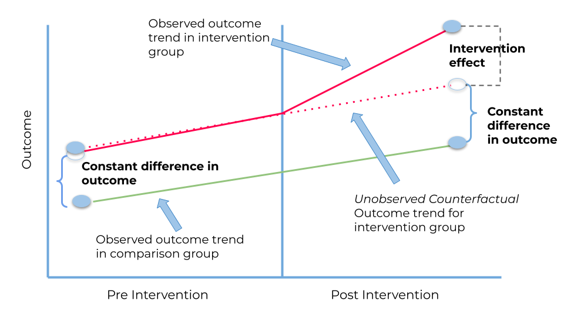
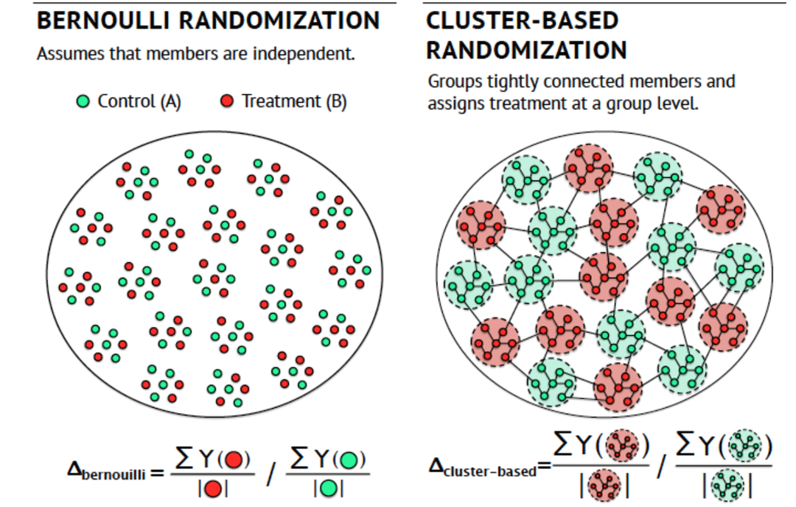
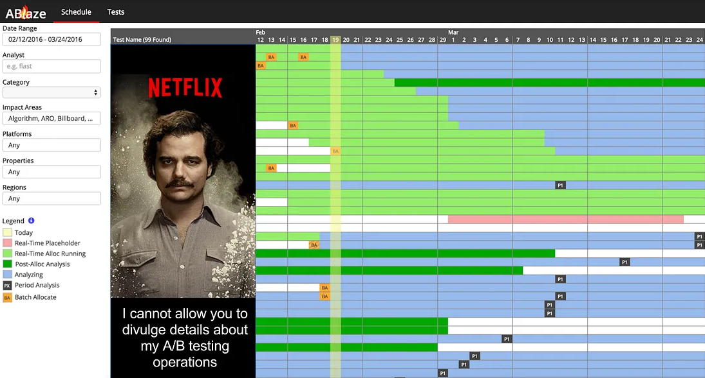
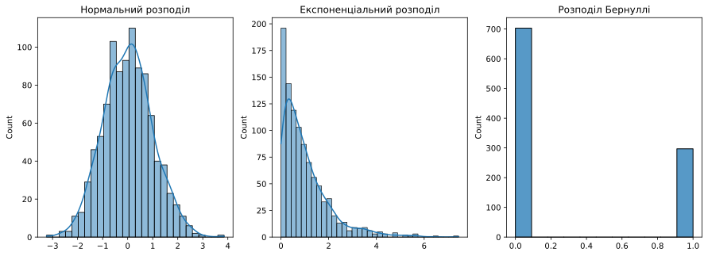
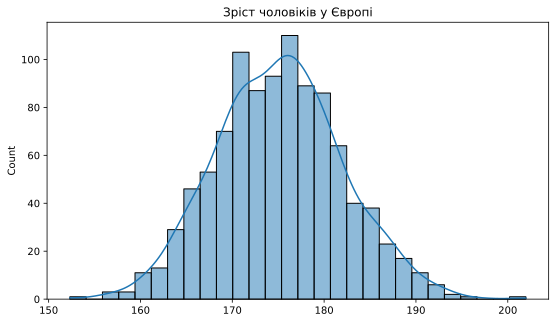
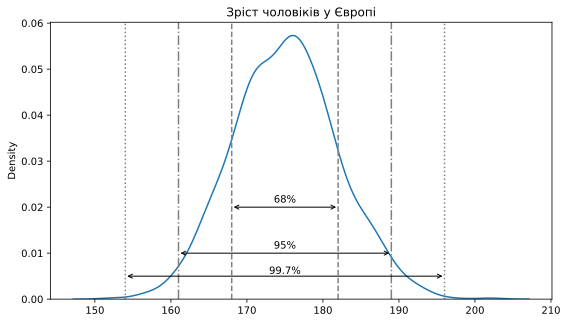
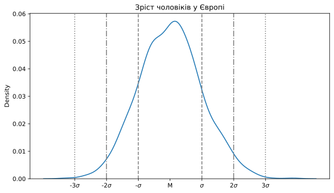
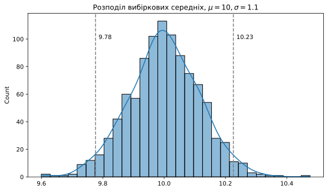

Про експерименти
Прикладна аналітика при розробці IT
Ігор Мірошниченко
КНУ імені Тараса Шевченка, ФІТ
Про мене

- Мірошниченко Ігор Вікторович
- кандидат економічних наук, доцент
- доцент кафедри технологій управління, ФІТ, КНУ імені Тараса Шевченка
- доцент кафедри математичного моделювання та статистики, ІІТЕ, КНЕУ
- викладач Київської школи економіки
- викладач Міжнародного інституту бізнесу (MBA)
DataCamp Group
DataCamp Group


DataCamp Group

Як долучитися?
- Зареєструйтесь на DataCamp
- Приєднатися до телеграм-каналу
Data Mirosh - Приєднайтесь до класу за посиланням
Примітка
Клас буде активний до 11 жовтня 2024 року, після чого буде буде відкрито наступний потік. Слідкуйте за оновленнями.
Ідеї та гіпотези
Тезис 1
Все починається з ідеї
- Джерела: аналіз даних, аналіз ринку, інсайти, генерація
- Непідтверджена ідея - гіпотеза
Тезис 2
Кожній ідеї - свій метод перевірки
- Глибинне інтерв’ю
- Опитування
- Юзабіліті-тестування
Тезис 3
Перевірці гіпотези необхідні умови
- Відсутність впливових факторів, окрім того, що перевіряється
- Репрезентативна оцінка
- Точність
Що таке A/B тестування?
З чого все починалось?
- Біологія, хімія, медецина.
Статистика як інструмент використовувався для клінічних досліджень, де важливо було визначити ефективність лікування.
Завдяки цим задачам математична статистика набула розвитку.
A/B тестування - це процес де…
- Перевіряються два і більше варіанти (тест і контроль) з метою визначення найефективнішого
- Ступінь ефективності вимірюється за допомогою розрахованих ймовірностей хибнопозитивних і хибнонегативних результатів
Хибнопозитивні рішення
Гіпотеза: підвищення вартості тижневої підписки з 1$ до 2$.
Результат:
На перших двох тижнях експерименту був зафіксований статистично значущий результат. Подакт і аналітик прийняли рішення прийняти результат як успішний. А після публікації змін на всіх користувачів — ключовий покзник змінився в гіршу сторону.
Хибнонегативні рішення
Проводили експеримент 2 дні, не побачили різниці, зупинили…
Результат:
Оскільки в експерименті було охоплено тільки 2 дні, ми не враховуємо поведінку аудиторії в інші дні тижня.
Можливо, зміна має відкладений ефект: користувач у понеділок потрапив у тестову групу, у п’ятницю прийняв рішення
Сфери використання A/B тестування
- Експерименти в дизайні (UI / UX)
- Тестування нового функціоналу в додатках та сайтах
- Операційні експерименти
- Оптимізація back-end’а та алгоритмів (наприклад, ранжування)
- Експерименти в ціноутворенні
Метрики експерименту: рівні
Цільові
Показники, на котрі націлено зміни
Випереджальні
Показники, що добре корелюють з цільовими, дають прогноз і корисні тоді, коли немає часу чекати на основну метрику
Guardrail
Показники, на які спрямовано впливає зміна, але які не є цільовими. Рекомендується за ними спостерігати і на їх основі, зокрема, ухвалювати рішення (наприклад, канібалізація)
Приклад системи рівнів
E-commerce, тест нового UI кошика
Цільові
- Конверсія в покупку, середній чек, ARPU, ARPPU
Випереджальні
- Додавання товару в кошик на сесію, перегляди товарів на сесію, відтік чекаута, помилки на чекауті
Guardrail
- Час від входу в кошик до його проходження, частка пошукових запитів із кошика, взаємодія з рекомендаційними блоками в кошику
Приклад системи рівнів
Освітній продукт, тест нового освітнього контенту
Цільові
- Продовження навчання, Середній дохід на користувача, що платить (ARPPU)
Випереджальні
- Інтенсивність навчання, кількість помилок у момент навчання, частота звернень до служби підтримки, технічні характеристики якості відео
Guardrail
- Час, проведений за одним заняттям, переривання занять, перемотування відео-контенту
Метрики: типи
Частки
реєстрації, утримання на 7 день [0,1,1,0,0,0,0,1,1,1,1,0,1,0,1,0,1].
Неперервні
час у сек./хв./т.п., чек в гривнях [1123.32,324.4, 823.21, 924.91].
Відношення
поїздок на водія, кліків на сесії, ціна за 1000 показів [10/123 = 0.081, 4129.2/12488 = 0.33,1/100 = 0.01]
Типи експериментів
- A/B тестування
- A/A
- A/B/C/…
- TDI (team draft interleaving)
- Diff-in-Diff
- Synthetic control
A/B
Чим корисний?
Виміряти ефект від зміни
Ключові особливості
- Кожна група експерименту бачить свій варіант
- Групи незалежні
- Групи взяті з однієї ГС
- Розподіл може бути нерівномірним
A/A
Чим корисний?
- Перевірити спліт-систему
- Вибрати гомогенні групи
Ключові особливості
- Групи незалежні
- Групи взяті з однієї ГС
- Часто використовується для симуляцій
A/B/C/…
Чим корисний?
Той самий A/B, тільки перевіряється від 2 і більше змін
Ключові особливості
- Групи незалежні
- Групи взяті з однієї ГС
- Пов’язана з проблемою множинної перевірки гіпотез
TDI (team draft interleaving)
Чим корисний?
Зміна в ранжируваних списках
Ключові особливості
- Один користувач бачить відразу кілька варіантів
- Найчастіше використовується в пошуку та рекомендаціях
- Вибірки залежні - що накладає особливості

A/B vs TDI
Приклад TDI: два алгоритми пошуку
Метод TDI дає змогу показати користувачеві результат видачі користувацького запиту із застосуванням двох алгоритмів.
Користувач вирішує кліком, який же алгоритм дав релевантну відповідь.
Поділу на варіанти тут немає.
Самі розташування відповідей різних алгоритмів будуть перемішуватися, щоб результат експерименту не був залежний від розташування.

Diff-in-Diff
Чим корисний?
Коли немає можливості поділити користувачів на групи в один момент часу
Ключові особливості
- Групи залежні та рознесені в часі
- Один із типів регресій
Приклад Diff-in-Diff: зміна ціни
Є дві групи (тест і контроль) і два періоди - період до взаємодії та після.
Одна з груп схильна до впливу, або бере участь у деякій програмі, у другому періоді, але не в першому.
Друга група не піддається впливу в жодному з періодів.
Метод усуває зміщення під час порівняння результатів у тестовій і контрольній групах тільки в другому періоді, яке може бути наслідком постійних відмінностей між цими групами.

Synthetic control
Чим корисний?
Не чутливий до соціальних (мережевих) ефектів
Ключові особливості
- Групи відокремлені одна від одної географічно або фізично
- Групи схожі за описовими статистиками, але знаходяться далеко одна від одної
- Контроль регулярно версіонує
Synthetic control: анімовані смайлики
Ми хочемо провести експеримент у соціальній мережі — дати можливість користувачам відправити анімовані смайлики в повідомленнях.
У подібних продуктах є велика особливість — користувачі спілкуються між собою.
І спілкування користувачів із груп А і Б можуть мати сильний вплив на результат усього експерименту

Як влаштоване АБ-тестування
Кожен великий продукт має свої особливості як з точки зору бізнесу, так і з точки зору метрик.
Ці особливості накладають певні обмеження і дають творчий простір для розвитку методології експериментів.
Комунікація водіїв між собою
- Водії між собою спілкуються
- Спілкування водіїв створюють мережевий ефект, який впливає на результат експерименту
- Відстежувати факт спілкування за подіями вкрай проблематично. Немає тригера, що комунікація почалася
Вічний контроль (модельований)
- Позбавлення від мережевих ефектів за допомогою поділу користувачів географічно
- Використовується в експериментах для мотивації водіїв
- Вимушена особливість продукту
Збільшення кількості експериментів на обмеженому трафіку
- Культура компанії зобов’язує все робити через A/B
- Трафік обмежений — команд багато
- Обмеження на A/B створюють проблеми для розвитку продукту
Платформа експериментів, внутрішні інструменти та R&D
- Платформа — інструмент автоматизації A/B і розвитку R&D
- Внутрішні інструменти прискорюють процес аналізу складних експериментів
- R&D дає змогу знаходити нові методи прискорення A/B тестів

Експеримент може запустити кожен
- Експеримент може запустити будь-який член команди на платформі
- Не кожна гіпотеза чимось підтверджена
- Регулярно тестуються «гіпотези-пустушки»
Жорстка система модерації
- Кожен експеримент модерується
- Щоб запустити експеримент на платформі — потрібно довести його цінність і докласти підстави для гіпотези
- Запустити експеримент — складно
- Експерименти — не просто поділ трафіку або базова статистика, це процес із повноцінним R&D
- Експерименти — це методологія управління гіпотезами і результатами
- Чим більший продукт, тим більше людей виділяється під завдання експериментів
Швидке введення в математичну статистику
Що дізнаємося?
- Математичне очікування випадкової величини
- Показники варіативності. Дисперсія та стандартне відхилення
- Ймовірнісний розподіл
Аналітик Орест і менеджер Святослав вирішили в п’ятницю піти в бар.
У їхньому місті є два бари з різним меню.
Але в середньому, за один келих ціна однакова.
Святослав делегував ухвалення кінцевого рішення Орест зі словами «ти ж аналітик». Куди варто їм іти?
| Волохатий ведмідь | |
|---|---|
| № позиції в меню | Ціна в грн |
| 1 | 150 |
| 2 | 150 |
| 3 | 165 |
| 4 | 185 |
| Розмарин та чебрець | |
|---|---|
| № позиції в меню | Ціна в грн |
| 1 | 50 |
| 2 | 150 |
| 3 | 200 |
| 4 | 250 |
Щоб відповісти, нам допоможе описова статистика
| Волохатий ведмідь | |
|---|---|
| № позиції в меню | Ціна в грн |
| 1 | 150 |
| 2 | 150 |
| 3 | 165 |
| 4 | 185 |
| Розмарин та чебрець | |
|---|---|
| № позиції в меню | Ціна в грн |
| 1 | 50 |
| 2 | 150 |
| 3 | 200 |
| 4 | 250 |
Щоб розв’язати задачку, послідовно порахуємо 3 метрики:
- Математичне сподівання: середнє за вибіркою
- Дисперсію:
- з мат. очікування будемо віднімати кожне значення вибірки
- зведемо у квадрат
- усе підсумуємо
- розділимо на кількість спостережень. Таким чином ми знайдемо суму відстаней різниць
- Стандартне відхилення: візьмемо корінь із порахованої дисперсії
| Волохатий ведмідь | |
|---|---|
| № позиції в меню | Ціна в грн |
| 1 | 150 |
| 2 | 150 |
| 3 | 165 |
| 4 | 185 |
M1 = 162.5
S21 = 206.25
SD1 = 14.36
| Розмарин та чебрець | |
|---|---|
| № позиції в меню | Ціна в грн |
| 1 | 50 |
| 2 | 150 |
| 3 | 200 |
| 4 | 250 |
M2 = 162.5
S22 = 5468.75
SD2 = 73.95
| Волохатий ведмідь | |
|---|---|
| № позиції в меню | Ціна в грн |
| 1 | 150 |
| 2 | 150 |
| 3 | 165 |
| 4 | 185 |
| Розмарин та чебрець | |
|---|---|
| № позиції в меню | Ціна в грн |
| 1 | 50 |
| 2 | 150 |
| 3 | 200 |
| 4 | 250 |
M1 = 162.5
S21 = 206.25
SD1 = 14.36
M2 = 162.5
S22 = 5468.75
SD2 = 73.95
Висновок
Обидва бари мають однакові мат. сподівання, проте розкид цін у меню в “Волохатий ведмідь” менший (14.36 < 73.95).
Оресту та Святославу варто зайти у “Розмарин та чебрець”, якщо вони хочуть більшого різноманіття.
Ще один приклад використання описових статистик.
Можна оцінити розкид каналів трафіку за якоюсь метрикою за допомогою коефіцієнта варіації:
\[ CV = \frac{SD}{M} \times 100\% \]
Органіка
15%
PPC
35%
Органіка явно стійкіша за закупівельний трафік
Будь-які явища, характеристики та події можна описувати за допомогою розподілів.
Варто врахувати, що їхня форма завжди залежить від природи їхнього походження та ймовірності того чи іншого значення випадкової величини
У статистиці найпоширенішим розподілом є нормальний розподіл. Він нагадує форму дзвона і дивовижним чином описує чимало явищ у природі.
Приміром, зріст чоловіків у Європі:
Більша частина значень розташована симетрично відносно середнього, а саме 95% усіх значень випадкової величини (або в межах 1,96 стандартних відхилень).
Це стверджується в «правилі 3-х сигм»
Воно стверджує, що ймовірність того, що випадкова величина відхилиться від свого математичного сподівання більше, ніж на три середньоквадратичні відхилення, практично дорівнює нулю. Правило 3-х сигм працює тільки для випадкових величин, розподілених за нормальним законом.

- 68% значень знаходяться в межах 1 \(\sigma\)
- 95% значень знаходяться в межах 2 \(\sigma\)
- 99.7% значень знаходяться в межах 3 \(\sigma\)
| Волохатий ведмідь | |
|---|---|
| № позиції в меню | Ціна в грн |
| 1 | 150 |
| 2 | 150 |
| 3 | 165 |
| 4 | 185 |
M1 = 162.5 та SD1 = 14.36
- при 1 \(\sigma\) = 162.5 \(\pm\) 14.36 = [148.14, 176.86]
- при 2 \(\sigma\) = 162.5 \(\pm\) 28.72 = [133.78, 191.22]
- при 3 \(\sigma\) = 162.5 \(\pm\) 43.08 = [119.42, 205.58]
Нам доводиться робити висновки на основі вибірок (наприклад, дані щодо користувачів з експерименту за період “х”), узяті з генеральної сукупності (всі можливі користувачі).
🧍🧍🏻🧍🏼🧍🏽🧍🏾🧍🏿🧍🏿♂️🧍🏾♂️🧍🏽♂️🧍🏼♂️🧍🏻♂️🧍♂️🧍♀️🧍🏻♀️🧍🏻♀️🧍🏻♀️🧍🏾♀️🧍🏿♀️🧍🧍🏻🧍🏼🧍🏽🧍🏾🧍🏿🧍🏿♂️🧍🏾♂️🧍🏽♂️🧍🏼♂️🧍🏻♂️🧍♂️🧍♀️🧍🏻♀️🧍🏻♀️🧍🏻♀️🧍🏾♀️🧍🏿♀️🧍🧍🏻🧍🏼🧍🏽🧍🏾🧍🏿🧍🏿♂️🧍🏾♂️🧍🏽♂️🧍🏼♂️🧍🏻♂️🧍♂️🧍♀️🧍🏻♀️🧍🏻♀️🧍🏻♀️🧍🏾♀️🧍🏿♀️🧍🧍🏻🧍🏼🧍🏽🧍🏾🧍🏿🧍🏿♂️🧍🏾♂️🧍🏽♂️🧍🏼♂️🧍🏻♂️🧍♂️🧍♀️🧍🏻♀️🧍🏻♀️🧍🏻♀️🧍🏾♀️🧍🏿♀️🧍🧍🏻🧍🏼🧍🏽🧍🏾🧍🏿🧍🏿♂️🧍🏾♂️🧍🏽♂️🧍🏼♂️🧍🏻♂️🧍♂️🧍♀️🧍🏻♀️🧍🏻♀️🧍🏻♀️🧍🏾♀️🧍🏿♀️🧍🧍🏻🧍🏼🧍🏽🧍🏾🧍🏿🧍🏿♂️🧍🏾♂️🧍🏽♂️🧍🏼♂️🧍🏻♂️🧍♂️🧍♀️🧍🏻♀️🧍🏻♀️🧍🏻♀️🧍🏾♀️🧍🏿♀️🧍🧍🏻🧍🏼🧍🏽
🧍🧍🏻🧍🏼🧍🏽🧍🏾🧍🏿🧍🏿♂️🧍🏾♂️🧍🏽♂️🧍🏼♂️🧍🏻♂️🧍♂️🧍♀️🧍🏻♀️🧍🏻♀️🧍🏻♀️🧍🏾♀️🧍🏿♀️
Часто про генеральну сукупність нам нічого не відомо: форма розподілу, математичне сподівання, стандартне відхилення.
Тому ми використовуємо вибіркові статистики для оцінки параметрів генеральної сукупності.
Генеральна сукупність
\(\mu = ?,\) \(\sigma = ?\)
🧍🧍🏻🧍🏼🧍🏽🧍🏾🧍🏿🧍🏿♂️🧍🏾♂️🧍🏽♂️🧍🏼♂️🧍🏻♂️🧍♂️🧍♀️🧍🏻♀️🧍🏻♀️🧍🏻♀️🧍🏾♀️🧍🏿♀️🧍🧍🏻🧍🏼🧍🏽🧍🏾🧍🏿🧍🏿♂️🧍🏾♂️🧍🏽♂️🧍🏼♂️🧍🏻♂️🧍♂️🧍♀️🧍🏻♀️🧍🏻♀️🧍🏻♀️🧍🏾♀️🧍🏿♀️🧍🧍🏻🧍🏼🧍🏽🧍🏾🧍🏿🧍🏿♂️🧍🏾♂️🧍🏽♂️🧍🏼♂️🧍🏻♂️🧍♂️🧍♀️🧍🏻♀️🧍🏻♀️🧍🏻♀️🧍🏾♀️🧍🏿♀️🧍🧍🏻🧍🏼🧍🏽🧍🏾🧍🏿🧍🏿♂️🧍🏾♂️🧍🏽♂️🧍🏼♂️🧍🏻♂️🧍♂️🧍♀️🧍🏻♀️🧍🏻♀️🧍🏻♀️🧍🏾♀️🧍🏿♀️🧍🧍🏻🧍🏼🧍🏽🧍🏾🧍🏿🧍🏿♂️🧍🏾♂️🧍🏽♂️🧍🏼♂️🧍🏻♂️🧍♂️🧍♀️🧍🏻♀️🧍🏻♀️🧍🏻♀️🧍🏾♀️🧍🏿♀️🧍🧍🏻🧍🏼🧍🏽🧍🏾🧍🏿🧍🏿♂️🧍🏾♂️🧍🏽♂️🧍🏼♂️🧍🏻♂️🧍♂️🧍♀️🧍🏻♀️🧍🏻♀️🧍🏻♀️🧍🏾♀️🧍🏿♀️🧍🧍🏻🧍🏼🧍🏽
Вибірка \(n\)
\(M = \dots,\) \(SD = \dots\)
🧍🧍🏻🧍🏼🧍🏽🧍🏾🧍🏿🧍🏿♂️🧍🏾♂️🧍🏽♂️🧍🏼♂️🧍🏻♂️🧍♂️🧍♀️🧍🏻♀️🧍🏻♀️🧍🏻♀️🧍🏾♀️🧍🏿♀️
Центральна гранична теорема
Центральна гранична теорема: припустимо у нас є деякий розподіл у ГС із середнім \(\mu\) та стандартним відхиленням \(\sigma\).
Тоді розподіл вибіркових середніх (sampling distribution) буде наближатися до нормального із середнім рівним середньому в ГС і стандартним відхиленням рівним \[\frac{\sigma}{\sqrt{n}},\] де \(n\) — це розмір вибірки (за умови достатнього розміру вибірки).
Якщо ми візьмемо середні всіх цих вибірок, то вони, найімовірніше, розподіляться нормально. І як ми вже знаємо, 95% усіх значень перебуватимуть в інтервалі \[M \pm 1.96 \times (SD / \sqrt{n})\]
Вибірка №1
\(M = 10, S^2 = 1.1\)
Вибірка №2
\(M = 9, S^2 = 1\)
Вибірка №3
\(M = 10.1, S^2 = 1\)
\(\dots\)

Для вибіркового середнього можна порахувати 95% довірчий інтервал (ДІ).
Згідно з ЦГТ, у цей інтервал має потрапляти середнє ген. сукупності.
Щоб порахувати 95% ДІ, можна скористатися раніше наведеною формулою для розрахунку стандартної помилки (Standard Error):
\[ SE = \frac{SD}{\sqrt{n}} \]
\(M \pm 1.96 \times SE \\ = M \pm 1.96 \times \frac{SD}{\sqrt{n}} \\ = 10 \pm 1.96 \times \frac{1.1}{\sqrt{100}} \\ = [10 - 1.96 \times 0.11, 10 + 1.96 \times 0.11] = [9.78, 10.22]\)
ЦГТ дуже сильний інструмент, але водночас складний. ЦПТ не можна просто так використовувати для порівняння вибірок, необхідно дотримуватися низки припущень, наприклад, спостереження випадкової величини мають бути незалежними.
Наприклад, це припущення легко порушується при порівнянні нового і старого сайту, тому що стара аудиторія побачить обидва варіанти
Висновки
- Щоб виміряти мінливість (шум) у даних, використовують дисперсію, стандартне відхилення (а ще можна інтерквартильний розмах, куртозис та інші метрики розкиду)
- У статистиці використовують дискретні та неперервні випадкові величини з розноманітними розподілами
- Щоб оцінити середнє ген. сукупності використовують ЦГТ
- Довірчі інтервали використовують, щоб дізнатися діапазон, в якому з заданою ймовірністю знаходиться середнє ген. сукупності
Дякую за увагу!